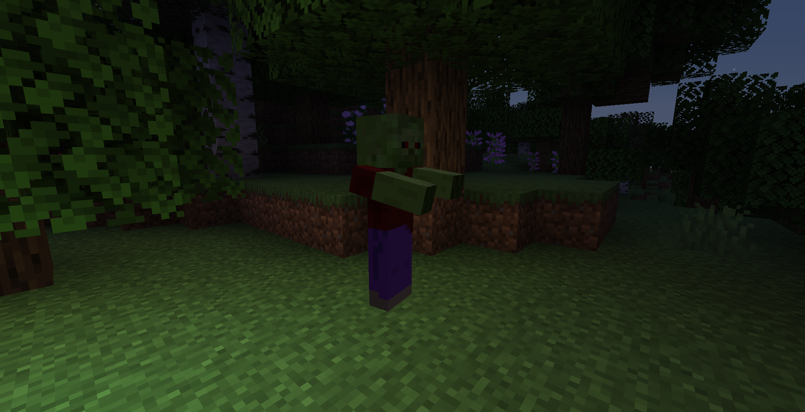

Back to Creatures
Tank

Slowly but deadly. Once he was just a normal human who worked in the mine shaft but there he got infected by
Zombies. The Tank has a lot of LP but is not really fast.
Health: 56 (28 )
)
Biome Category Spawn:
Taiga
Jungle
Plains
Savanna
Beach
Forest
River
Swamp
Drops:
Drop rate vary´s